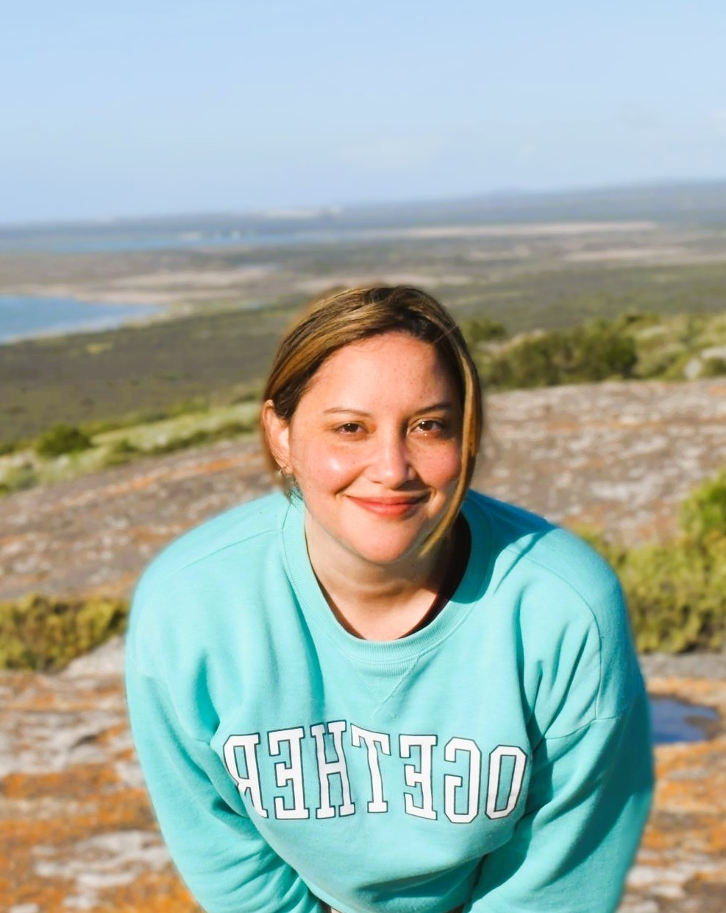

I’m a Learning Experience Designer with a growing focus on UI/UX, driven by the intersection of human behavior and digital design. With a background in Organisational Psychology, Information Systems, and Graphic Design, I focus on the “why” behind every interaction to create experiences that actually make sense to the people using them.
I specialise in turning complex ideas into intuitive, high-fidelity designs. Whether I’m building a learning experience or user interface, my goal is the same: to design digital spaces that feel effortless, purposeful, and quietly impactful.
Outside of design, I enjoy experimenting in the kitchen and getting lost in a good book, with travel always on the horizon.